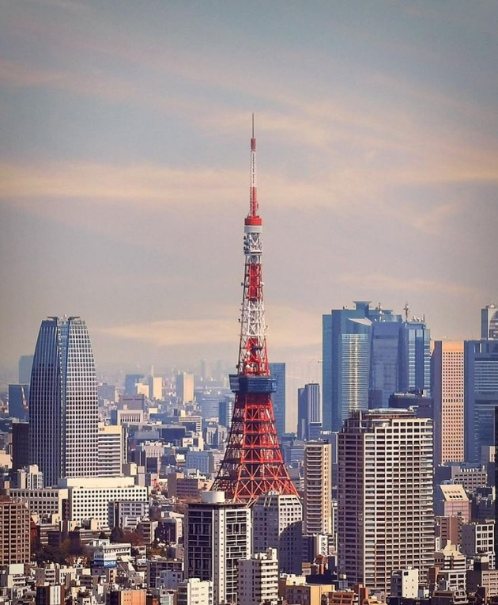
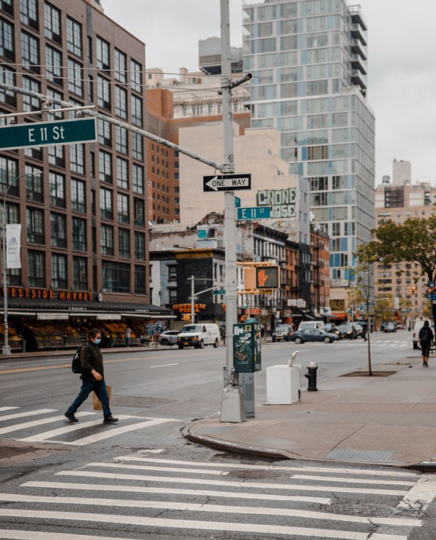
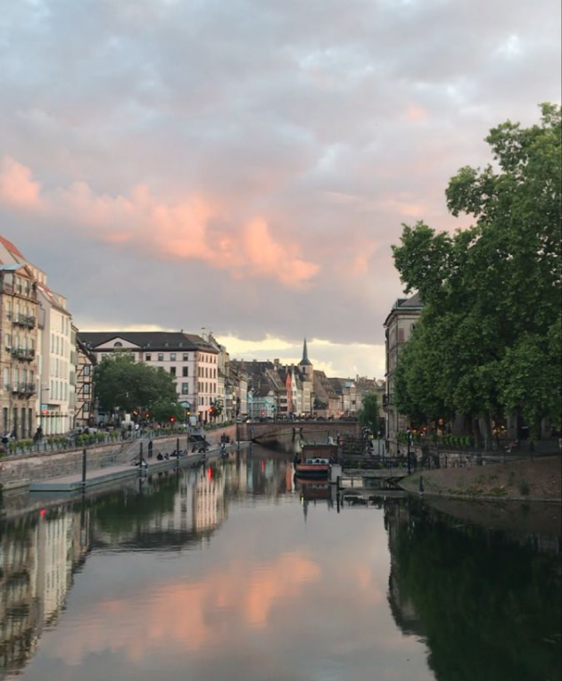
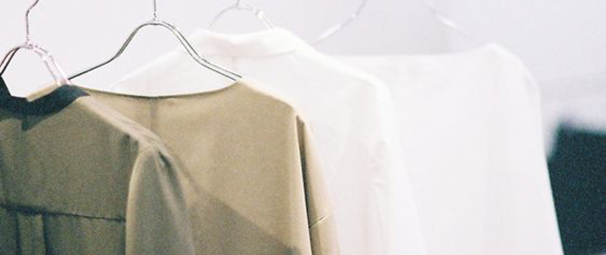
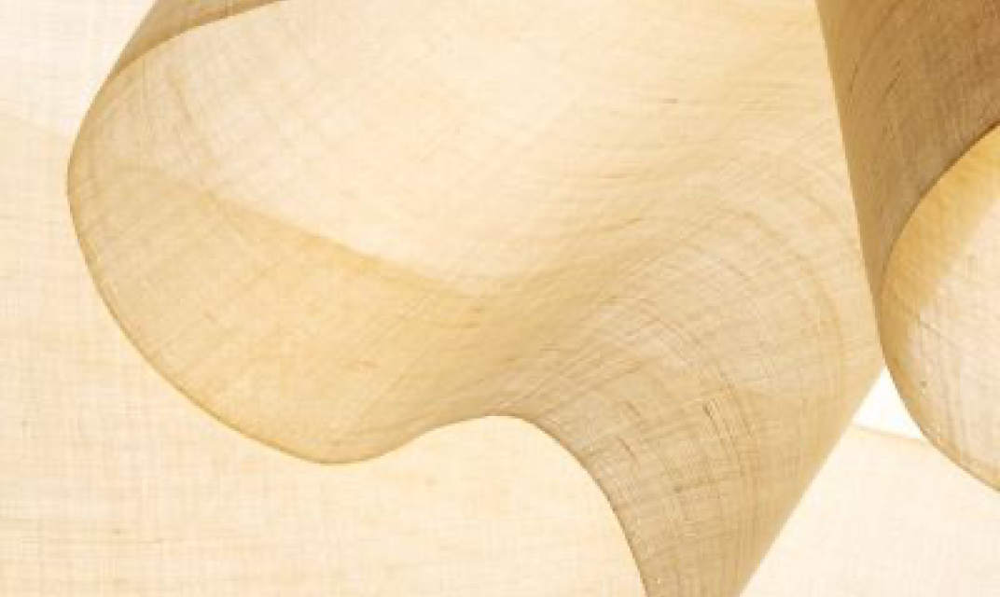
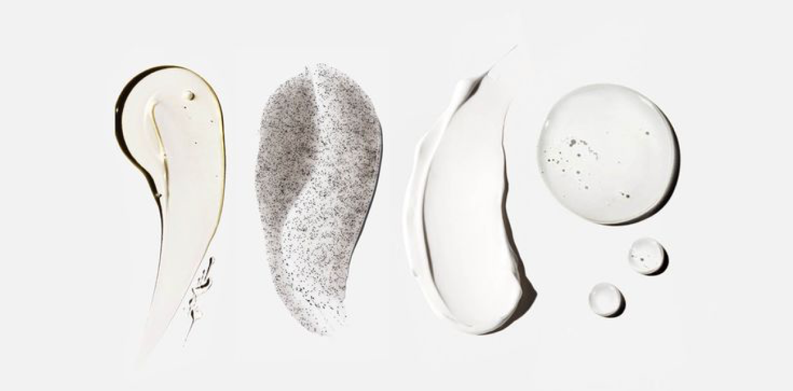
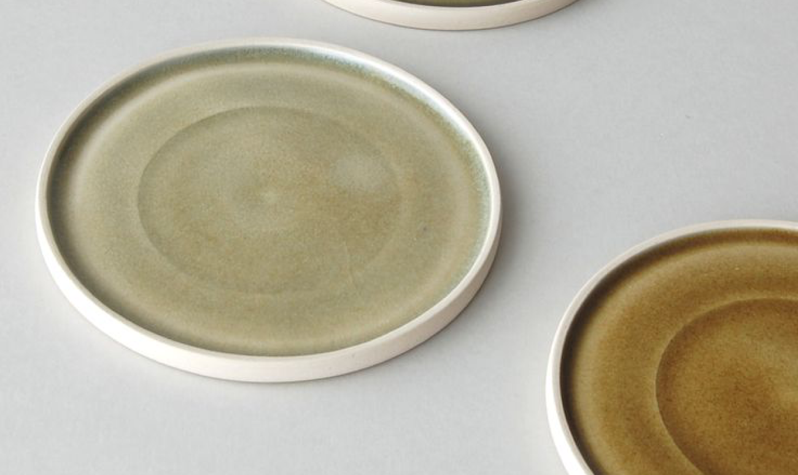
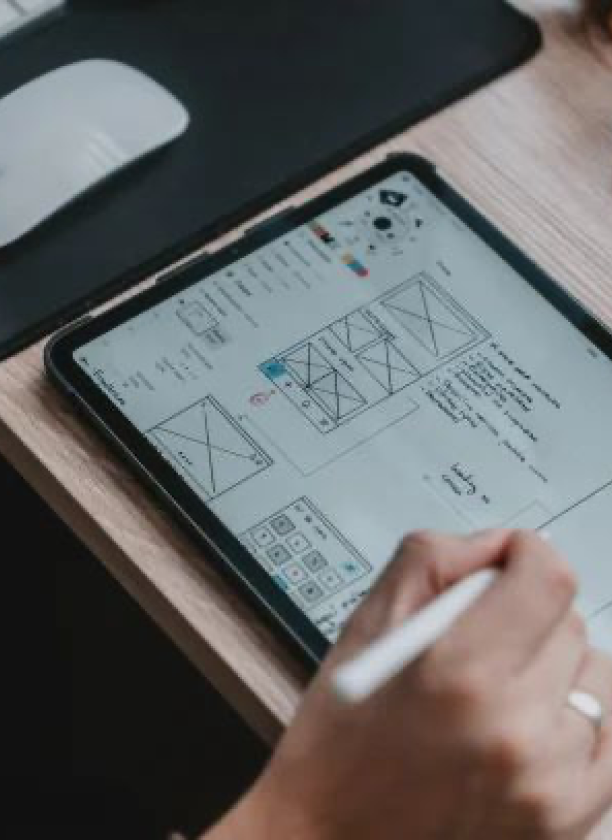
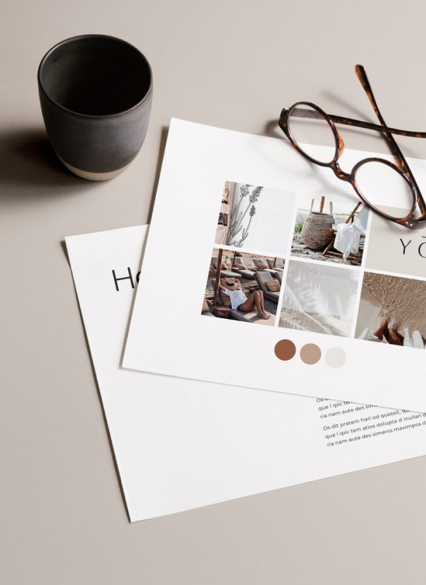
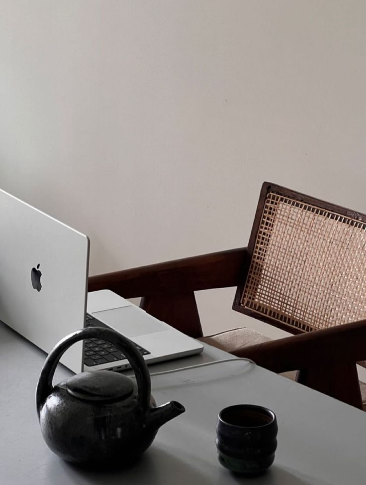

About Me
I am a UX/UI designer based in New York.


With a background in international business law, I have lived in Asia, Europe, and America, and I've worked in multiple international companies.
This experience has allowed me to interact with people from various countries and deepen my understanding of cultural differences.

My experiences




My Goal
We are now in an era where people around the world can access the same websites and applications from anywhere, and these have become an integral part of business.
Leveraging my background, I aspire to become a UX/UI designer who can address the pain points of our users and play an integral role in improving their experience.
Furthermore, I look forward to working as part of a team and collaborating with individuals from diverse backgrounds while offering my own unique perspective.


